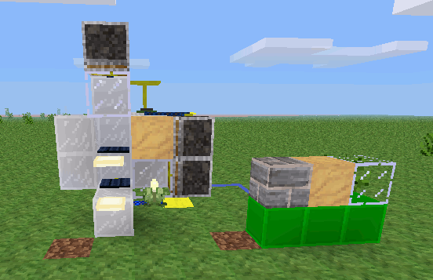

Mesecons Laboratory
Adventures in digital circuitry.
Node Detector
23/3/13 - Uberi
Difficulty level:


 (3/10)
(3/10)
This article assumes you have the Digilines mod, which I generally consider a de facto part of Mesecons. It is still possible to complete it without this mod, but replacing its functionality with fancy wiring is an exercise left to the reader.
Have you ever woken up just feeling like you want to abuse some game mechanics? No? Well, how about detecting different types of nodes?
How did it know the node was sand? Same way it does it below:
This machine takes a node, subjects it to some tests, and tells you which one of three different types of nodes it is! What's more, it cleans and resets itself, so all you have to do is add input to the top!
Step 1: Design
What should a node detector detect? Well, this one can check for a few things:
- Whether a node is transparent, like glass.
- Whether the node falls when unsupported, like sand.
- Whether the node is neither tranparent nor falls when unsupported, like cobble
With only two checks, transparency and falling, we can classify a given node into four categories. However, since no node belongs to one of the categories, namely transparent and falling, we effectively have three. This lets us tell the difference between cobble, sand, and glass.
How do we check if a node is transparent? Well, a transparent node does not block light, so we can put a light on one side of the node, and check the light level on the other side. If the node blocks the light, the detected light level will be lower, and we know the node is solid. Otherwise, the detected light level is higher and we know the node is transparent.
We can check for light levels using solar panels. Solar panels usually only respond to very bright light: direct sunlight, directly beside a torch, or one node away from a lamp:

As you can see, when a solid node is blocking the way, the solar panel is off. In contrast, the transparent node allows light through and the solar panel is on.
Downloads
All files are available under the same license as this article. The WEM schematics can be loaded using the //load command in WorldEdit.
Tic-tac-toe machine in WorldEdit-Meta format (WEM)

This work is licensed under a Creative Commons Attribution-ShareAlike 3.0 Unported License.